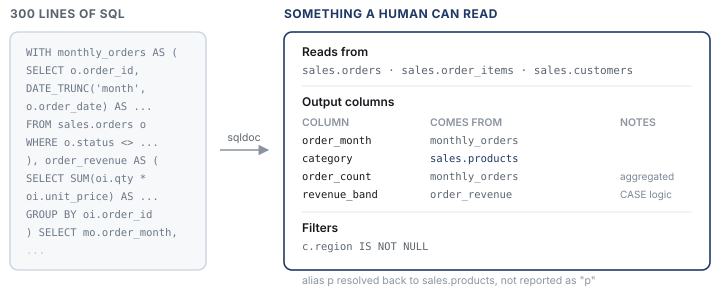

sqldoc: explaining a report without reading the SQL
A small tool for the question I get asked more than any other.
The most common question I get isn't technical. It's "what's actually in this report?" — usually from a scrum master sizing a change, or an analyst checking whether a number they've been handed means what they think it means.
Answering it properly means opening 300 lines of SQL, tracing where each output column came from, and translating that into a sentence. It takes fifteen minutes and interrupts whatever I was doing. Multiply by a reporting portfolio of any size and it becomes a real tax.
So I wrote something to answer it for me.

What it does
Given a query, it reports the output columns and the expression behind each one, the base tables
it reads (CTEs and subqueries excluded, which matters more than it sounds), the joins with their
conditions, the filters, and the grain — GROUP BY, DISTINCT, row limits.
Output is Markdown for people or JSON for anything else.
The part I care about most is alias resolution. Most queries alias everything to single letters,
so a naive tool tells you category comes from p. Useless. Resolving that
back to sales.products is what makes the output worth reading:
| Column | Comes from | Notes |
| -------------- | ------------------------------ | ----------------- |
| order_month | monthly_orders.order_month | |
| category | sales.products.category_name | |
| order_count | monthly_orders.order_id | aggregated |
| revenue_band | order_revenue.gross_revenue | conditional logic |
Why I didn't use a parser library
If you're building something serious, use sqlglot. It has a real grammar, handles dialects properly, and does lineage. I'm not pretending to compete with it.
I went zero-dependency for a specific reason: a lot of corporate BI environments are locked down
hard enough that pip install isn't a thing you can rely on. A tool that runs on a
bare Python install is a tool that actually gets used. That constraint turned out to be a design
input rather than an obstacle.
What it costs is coverage, and I'd rather be upfront about that than oversell it.
The bit that's actually hard
Splitting a query into clauses sounds trivial until you try it. All of these will break a naive
.split(",") or a regex for WHERE:
SELECT 'a, b' AS label -- comma inside a string literal
SELECT fn(a, b) AS x -- comma inside a function call
SELECT * FROM (
SELECT 1 WHERE z = 1 -- WHERE belonging to a subquery
) s WHERE a = 1
SELECT col -- WHERE is not here
FROM t
SELECT wherever FROM t -- keyword as a substring
So the core is a scanner that walks the string tracking bracket depth and whether it's inside a literal, and only splits at depth zero outside quotes. Everything else builds on that. It's about a hundred lines and it's the reason the rest of the tool can stay simple.
That's also where the tests are concentrated — 29 of them, and the ones that earn their keep are the nasty inputs above rather than the happy path.
One bug worth mentioning
My word-boundary check rejected any separator that already contained whitespace. Splitting a
WHERE clause on " and " silently returned one condition instead of two,
because the character after the separator is legitimately the start of the next token — the check
was asking for a non-alphanumeric character that could never be there.
It only surfaced because a test asserted a filter count rather than just checking the thing didn't throw. A test that had asserted "returns a list" would have passed happily and shipped wrong documentation, which for a tool like this is worse than crashing.
What it won't do
INSERT,UPDATE,MERGE— reporting queries onlyUNIONbranches aren't split out separatelySELECT *stays opaque; expanding it needs a schema it doesn't have- Deeply nested correlated subqueries get summarised rather than traced
It's built to say less rather than guess. A documentation tool that invents lineage is worse than no tool at all, because people believe it.
Where it goes next
The JSON output is the interesting half. Once a query's structure is machine-readable you can put it behind a search index, feed it into a data catalogue, or hand it to an LLM as grounding — which connects directly to the MCP work: same principle, different layer. Give the model the facts instead of letting it guess.
Written from scratch on public example SQL. No employer queries, schema or data were used. Code is on GitHub under MIT.